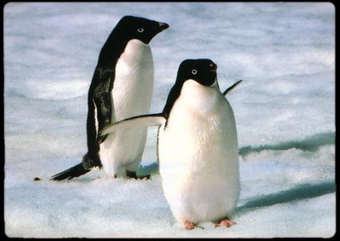
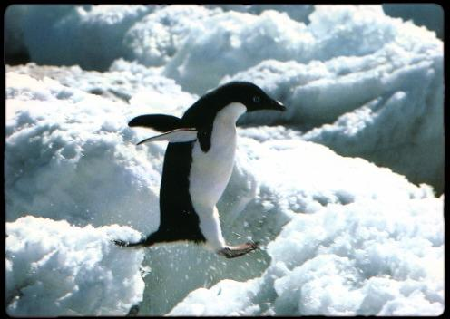
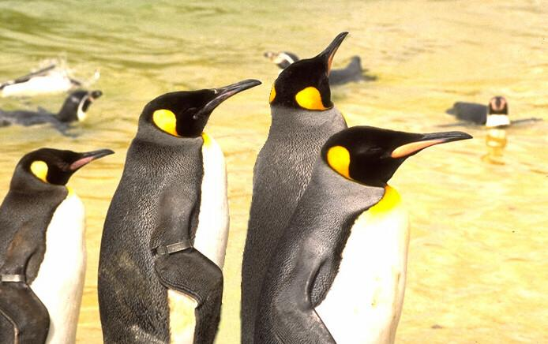

HOME
What's New?
This season we have a whole bunch of wonderful new stuff going on at the park! Why not enjoy our of the state of the art Penguin Rollercoaster? Or perhaps have a cool dip in our Iceberg-swimming pool? We also have some really exciting new tours, for instance the "Penguins & Polar Bears, who would have thought!?", where we take you on a magical trip to see what it would have actually been like if polar bears and penguins actually lived in the same region!
We would also like to take a moment to welcome our most recent addition of penguins to the park! Little Slider and her brothers Peppy and Womp are eager to flap their tiny wings for you! Be sure to say hello when you visit us! A warm welcome to the three of them!
Recent Photos
Our oldest couple of penguins, Sammy(left) and Pamela(right)!"
"Jumper skipping about on a sunny day!"
